Respeito dentro e fora do tatame
Cumprimentar o professor, esperar a vez, cuidar do colega. A rotina da aula ensina isso sem sermão.
Rua das Acácias, 120, Centro. Segunda a sexta, 6h às 21h30. Sábado, 9h às 12h.
Jiu-jitsu para crianças a partir de 4 anos e para adultos que nunca treinaram. Turmas separadas por idade, e a primeira aula é por nossa conta.
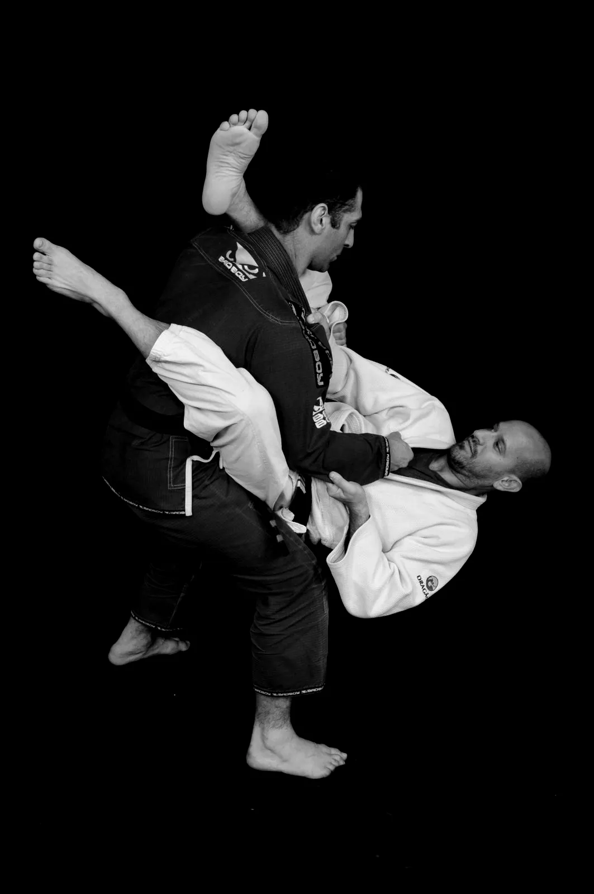
A técnica vem com o tempo. Antes dela aparecem outras mudanças, em casa e na escola.
Cumprimentar o professor, esperar a vez, cuidar do colega. A rotina da aula ensina isso sem sermão.
A criança corre, rola e se cansa, mas com começo, meio e fim. Muitos pais notam o sono melhorando.
O jiu-jitsu ensina a controlar sem machucar. A criança aprende a sair de uma situação ruim com calma.
Cada grau na faixa é uma conquista que a criança enxerga, conta pra todo mundo e mostra em casa.
Jiu-jitsu quer dizer arte suave. Toda luta de treino passa por quatro momentos, e cada um ensina alguma coisa que vale fora do tatame.
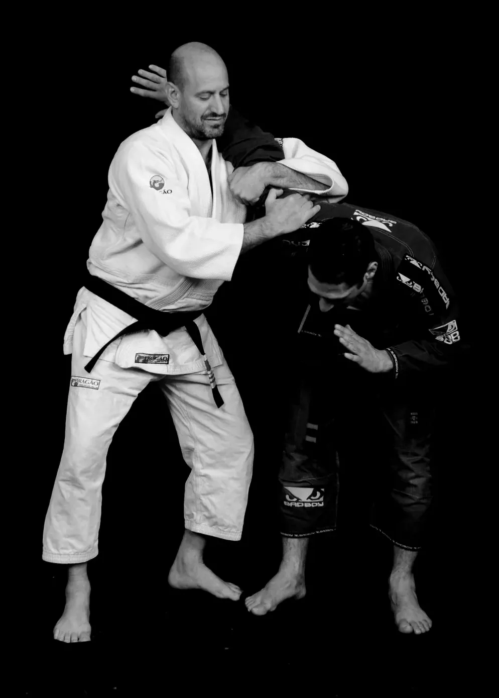
Segurar firme e soltar quando o colega pede.
Tudo começa com a mão no kimono do outro. A criança aprende a usar força com controle, sem puxar com raiva.
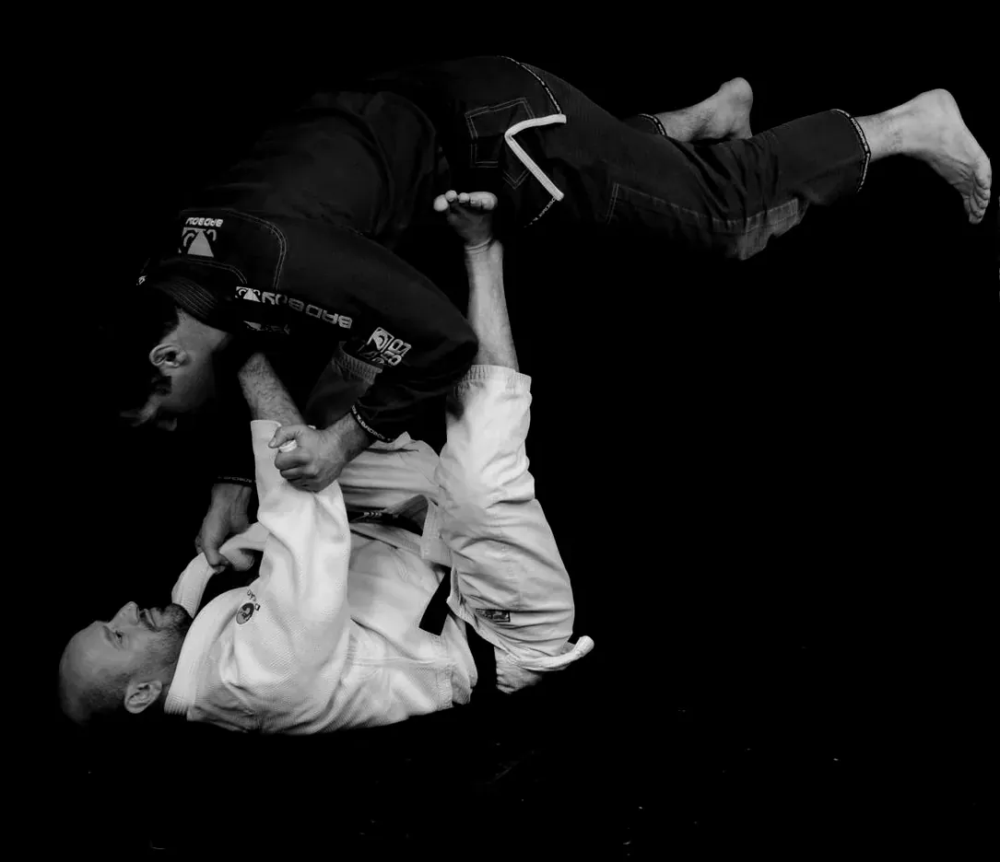
Pensar antes de agir.
Passar a guarda é resolver um problema: o colega se defende e você procura outro caminho. É xadrez com o corpo.
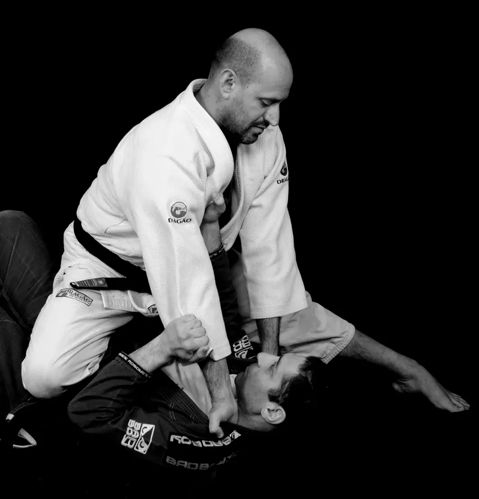
Dominar sem bater.
Imobilizar alguém sem soco e sem chute. Vence quem tem técnica, não quem é maior, e por isso se chama arte suave.
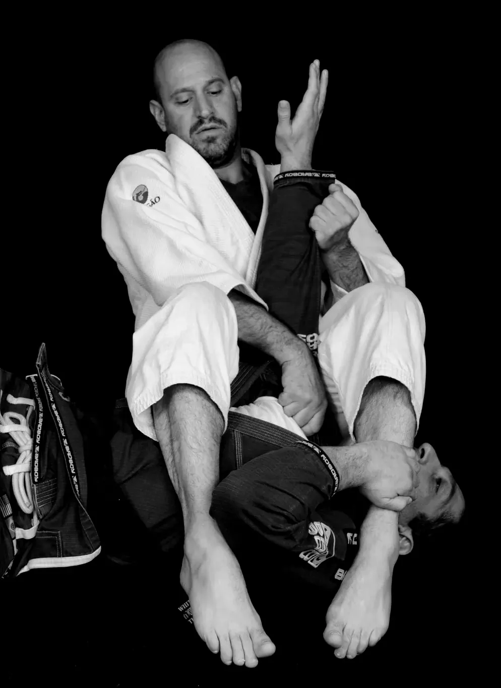
Bateu, parou.
Quando o colega dá três tapinhas, a luta para na hora. Respeitar o limite do outro é a primeira regra do tatame.
Cada turma tem ritmo, regras e faixas próprias. Escolha a turma para ver os dias, os horários e as faixas.
7 a 10 anos
Técnica de verdade com linguagem de criança. Toda aula termina com luta orientada, e o professor acompanha cada um até o próximo grau.
A mensagem já vai pronta com a turma escolhida.
Ninguém chega sabendo. O professor recebe quem é novo e explica tudo antes de entrar no tatame.
Pela idade, ali em cima. Na dúvida entre duas, a gente indica.
Confirmamos o dia e o horário e tiramos qualquer dúvida antes.
Camiseta e bermuda servem. Se quiser, emprestamos um kimono.
Os pais podem assistir à aula das crianças. Sem compromisso de matrícula.
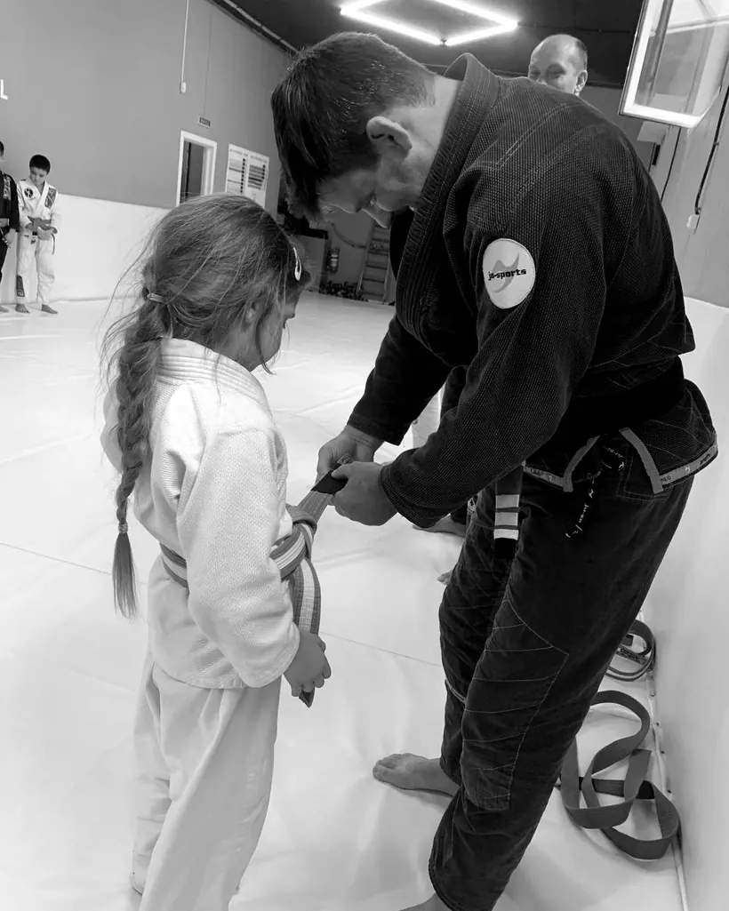
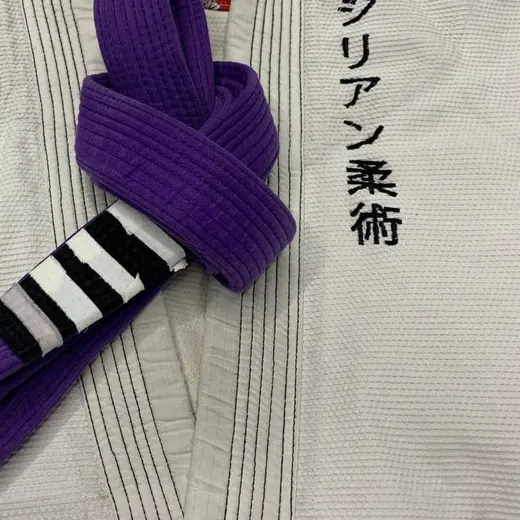
Prof. Marcelo Antunes, faixa preta 3º grau
Começou a treinar aos 9 anos, no mesmo bairro, e dá aula para crianças há 15. Na turma dos pequenos ele se ajoelha pra conversar na altura deles, e é ele quem amarra cada grau novo na faixa.
Treino de segunda a sábado, das 6h30 às 21h30. Tem gente de 4 a 60 e poucos anos.
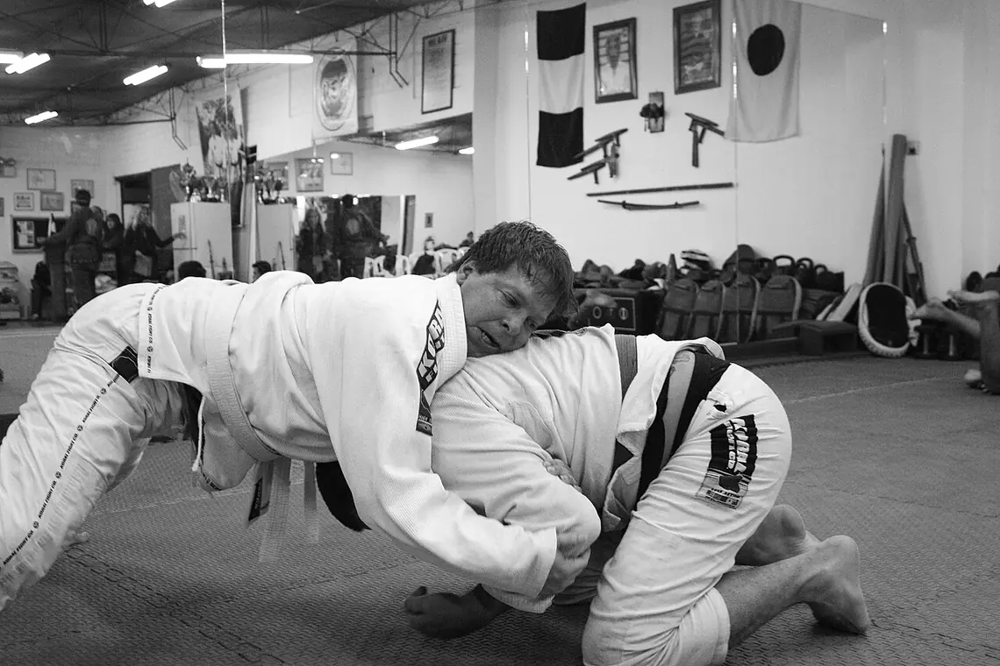
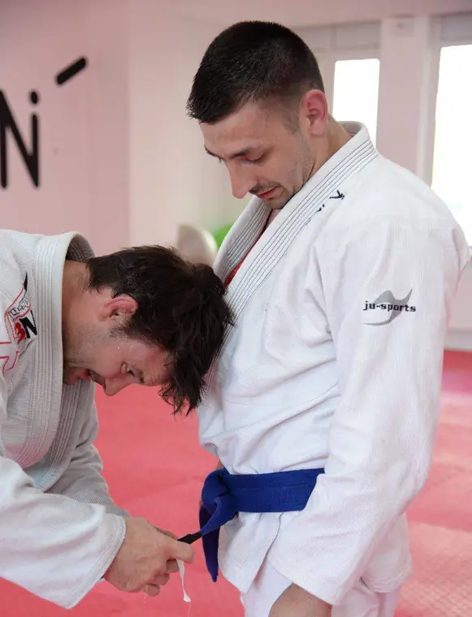
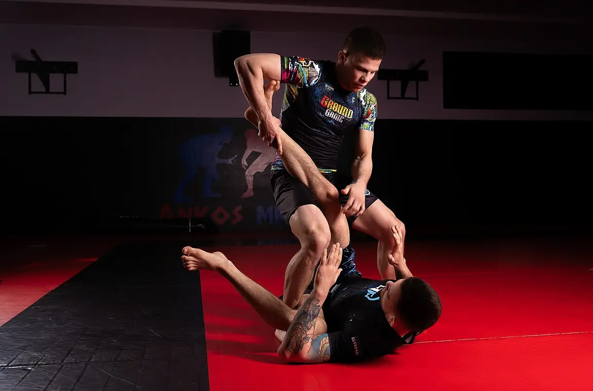
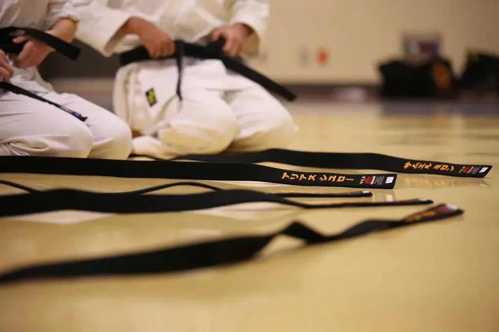
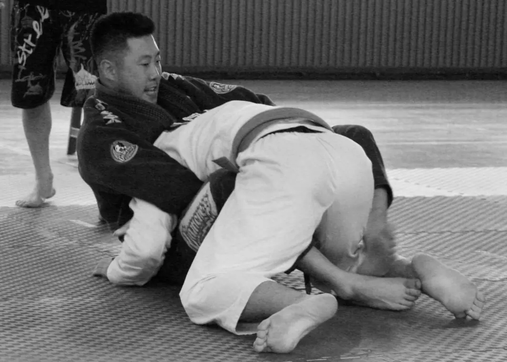
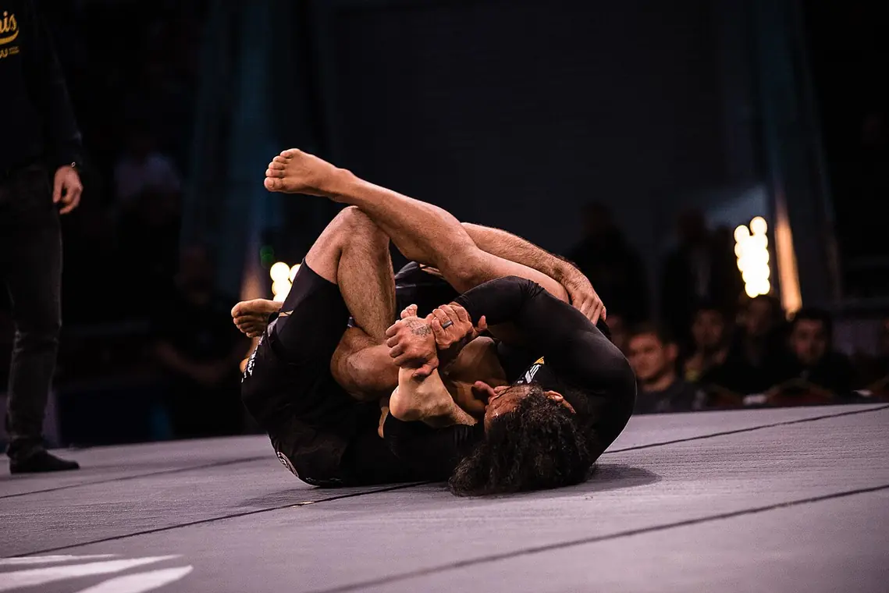
140 avaliações no Google
“Meu filho era muito tímido e hoje chega na aula cumprimentando todo mundo. O professor tem uma paciência enorme com os pequenos.”
“Minha filha de 5 anos conta os dias pra próxima aula. Quando ganhou o primeiro grau, mostrou a faixa pra família inteira.”
“Comecei com 38 anos sem nunca ter treinado nada. A turma de iniciante me deixou à vontade desde o primeiro dia.”
A partir de 4 anos, na turma dos pequenos. Nessa idade a aula é quase toda em forma de brincadeira, com rolamento e equilíbrio.
Nas turmas infantis não tem golpe no rosto nem chute. O treino é de controle, e o professor para a luta a qualquer sinal. Pequenos arranhões e roxos podem acontecer, como em qualquer esporte.
Muitos chegam assim. Na primeira aula ele pode só assistir um pouco, e o professor vai chamando aos poucos, sem forçar.
Não. As primeiras aulas podem ser de camiseta e bermuda, e emprestamos kimono para a experimental. O kimono só é necessário depois da matrícula.
Pode. Temos um espaço para os pais ao lado do tatame.
Os planos mudam conforme a frequência e se há irmãos treinando. Chame no WhatsApp que passamos os valores certinhos.
Mande uma mensagem com a idade de quem vai treinar. A gente responde com a turma certa e o próximo horário livre.
Agendar aula grátis